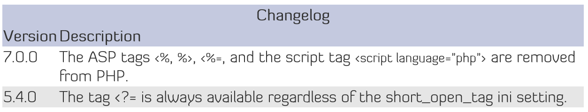
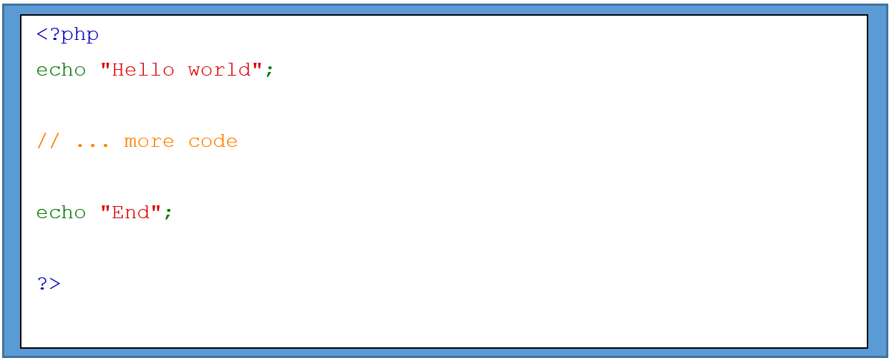

What is PHP?
It is an open source scripting language that is widely used. PHP file can contain HTML, JavaScript, CSS, and PHP code. Scripts are executed on the server and returned to the browser as plain HTML.
PHP can generate dynamic page content, create, open, write,delete and close file on the server. It can add, delete, modify data in your database. It can send and receive cookies and can encrypt data.
PHP Tags
The opening tag of php is <?php and ending tag is ?> which tells the PHP to start and stop executing the code between them. It allows PHP to be embedded in all sort of different document and outside this pair of tags is already ignored by the PHP. For a pure PHP code, it is preferred that closing tags are placed at the end so that there will be no unwanted effects that will buffer while the program is executing.
 Escaping from HTML
Every code outside the PHP tag is ignored which allows PHP to have a mixed content. PHP can be embedded to an HTML file.

After the PHP interpreter hits the closing tag, it will start outputting the code next to it.
Advanced escaping using conditions
<?php if ($expression == true): ?>
This will show if the expression is true.
<?php else: ?>
Otherwise this will show.
<?php endif; ? >
PHP will skip the block where the condition is not met.
PHP Opening and Closing Tags
- <?php echo 'if you want to serve PHP code in XHTML or XML documents,use these tags'; ? >
- You can use the short echo tag to <?= 'print this string' ? >. It's always enabled in PHP 5.4.0 and later, and is equivalent to <?php echo 'print this string' ? >.
- <? echo 'this code is within short tags, but will only work '. 'if short_open_tag is enabled'; ? >
- <script language="php">
echo 'some editors (like FrontPage) don't
like processing instructions within these tags';
</script>
This syntax is removed in PHP 7.0.0. - <% echo 'You may optionally use ASP-style tags'; %>
Code within these tags <%= $variable; %> is a shortcut for this code <% echo $variable; %>
Both of these syntaxes are removed in PHP 7.0.0.
Super Global Variables
Can be used or accessed anywhere in the script
here are the superglobal variables:
- $GLOBALS
- $_SERVER
- $_REQUEST
- $_POST
- $_GET
- $_FILES
- $_ENV
- $_COOKIE
- $_SESSION
PHP Session Functions
- session_abort
- it will disregard the array changes and finishes the session.
- session_cache_expire
- it will return the current cache expire
- session_cache_limiter
- it will either get and/or set the current cache limiter
- session_commit
- It is the alias of session_write_close
- session_create_id
- it will create a new session id
- session_decode
- it will decode the session data from a session encoded string
- session_destroy
- it will destroy all data which is registered to a specific session
- session_encode
- it will encode the current session data as a session encoded string
- session_gc
- it will perform the session data garbage collection
- session_get_cookie_params
- it will fetch the session cookie parameters
- session_id
- it will either get and/or set the current session module
- session_is_registered
- It will investigate whether a global variable is registered in a specific session
- session_module_name
- it will either get and/or set the current session module
- session_name
- it will either get and/or set the current session name
- session_regenerate_id
- it will update the current session id to a new one.
- session_register_shutdown
- session shutdown function
- session_register
- it will register 1 or more global variable using the current session you are using.
- session_reset
- it will reload session arrays with their original values
- session_save_path
- it will either get and/or set the current session save path
- session_set_cookie_params
- it will set the session cookie parameters
- session_set_save_handler
- it will sets the use-level session storage functions
- session_start
- it may start a new or resume an existing session
- session_status
- it will return the current session status
- session_unregister
- it will unregister a global variable from the current session
- session_unset
- it will free all session variables
- session_write_close
- it will write session data and end session